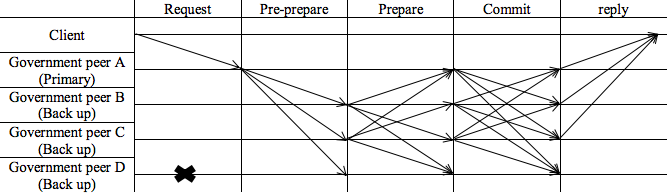

Consensus Mechanism
A Practical Byzantine Fault Tolerance - PBFT mechanism is going to be used. This is
because all nodes and peers in the system are known due to permissioned nature of the
blockchain. Node count will hardly exceed 20 which have been proven to be highly scalable and
secure formula in PBFT consensus while having finality. It also does not require significant
power consumption to reach this consensus.
Since the government is the only stakeholder capable of committing data, the consensus
mechanism will occur intra-firm; that is, participants in consensus mechanism will be all the
government nodes from which new data can be committed.
